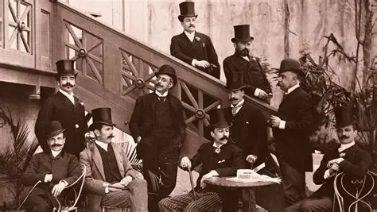

Eça de Queiroz (1845–1900), principal expoente do Realismo em Portugal, denunciou as contradições da sociedade portuguesa do século XIX, explorando críticas sociais e ceticismo moral.
Eça de Queiroz utiliza ironia, detalhamento psicológico e crítica social afiada.